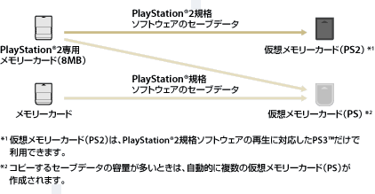

ゲーム > PlayStation®2 / PlayStation®規格ソフトウェアを遊ぶ > メモリーカードのセーブデータを使う
メモリーカードのセーブデータを使う
お持ちのPlayStation®2専用メモリーカード（8MB）／メモリーカードに保存されているセーブデータを使ってゲームをするときは、本体ストレージ内の仮想メモリーカードにセーブデータをコピーする必要があります。コピーするには、別売りのメモリーカードアダプターが必要です。
重要
- PS3™では、一部のPlayStation®2およびPlayStation®規格ソフトウェアが、従来のPlayStation®2およびPlayStation®と異なる動作をする場合や、適切に動作しない場合があります。
- また、一部のPS3™では、PlayStation®2規格ディスクの再生に対応していません。詳しくは［再生できるディスクの種類について］、各地域のWebサイト、または製品同梱の取扱説明書をご覧ください。
1. |
|
|---|---|
2. |
PS3™にメモリーカードアダプターを接続し、メモリーカードをセットする。 |
3. |
表示されたメモリーカードからコピーしたいセーブデータのアイコンを選び、 |
4. |
［コピー］を選ぶ。 |
5. |
差込口を割り当てる。 |
 （ゲーム）から
（ゲーム）から （メモリーカード管理）を選ぶ。
（メモリーカード管理）を選ぶ。 （メモリーカード（PS））または
（メモリーカード（PS））または （メモリーカード（PS2））のアイコンが表示されます。
（メモリーカード（PS2））のアイコンが表示されます。  （新しい仮想メモリーカードの作成）を選び、画面の指示に従って仮想メモリーカードを作成してください。
（新しい仮想メモリーカードの作成）を選び、画面の指示に従って仮想メモリーカードを作成してください。ヒント
- PlayStation®2専用メモリーカード（8MB）／メモリーカードに保存されているセーブデータは、種類によって次のように仮想メモリーカードにコピーされます。
- セーブデータによっては、コピーに数十秒から数分かかることがあります。
- PlayStation®2専用メモリーカード（8MB）／メモリーカードに保存されているセーブデータをまとめてコピーするときは、手順3でメモリーカードを選んで
 ボタンを押し、オプションメニューで［コピー］を選んでください。
ボタンを押し、オプションメニューで［コピー］を選んでください。 - セーブデータによっては、コピーを禁止されているものがあります。そのようなデータをPS3™で使うときは、手順4で［ムーブ］を選んでください。セーブデータが本体ストレージに移動し、メモリーカードからは削除されます。
- ムーブしたセーブデータをもう1度メモリーカードに戻すこともできます。

セーブデータをメモリーカードにコピーする
本体ストレージに保存されたPlayStation®2 / PlayStation®規格ソフトウェアのセーブデータをメモリーカードにコピーできます。コピーするには、別売りのメモリーカードアダプターが必要です。
1. |
|
|---|---|
2. |
PS3™にメモリーカードアダプターを接続し、メモリーカードをセットする。 |
3. |
セーブデータが保存されている |
4. |
［コピー］を選ぶ。 |
 （仮想メモリーカード（PS））または
（仮想メモリーカード（PS））または （仮想メモリーカード（PS2））からコピーしたいセーブデータのアイコンを選び、
（仮想メモリーカード（PS2））からコピーしたいセーブデータのアイコンを選び、ヒント
- 仮想メモリーカードに保存されているセーブデータを、メモリーカードにまとめてコピーすることはできません。
- セーブデータによっては、コピーを禁止されているものがあります。そのようなデータは、手順4で［ムーブ］を選ぶとセーブデータがメモリーカードに移動し、本体ストレージからは削除されます。
- ムーブしたセーブデータをもう1度本体ストレージに戻すこともできます。